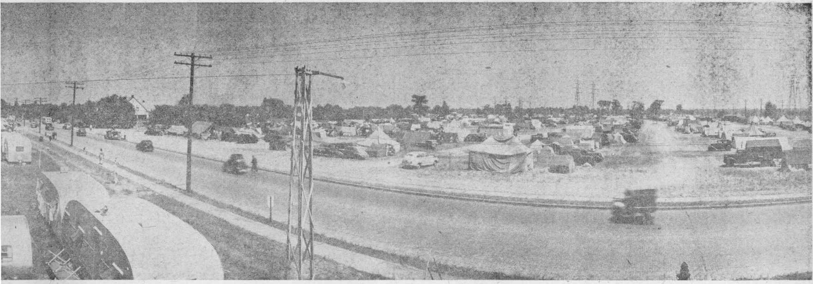

Unique platform set up on the playing field for convention speakers.
GLAD NATIONS THEOCRATIC ASSEMBLY of Jehovah's witnesses
Cleveland, August 11, 1946
5 cents a copy 200,000 copies
SECOND BOUND BOOK
RELEASED AT ASSEMBLY
Society's president releases "Let God Be True".
67,000 Hail New Preaching Instrument
Let God Prove to be True"
In connection with the release of the new book "Let God Be
True,’’ N. H. Knorr’s discourse was based on the Bible text: “But let God prove to be true, albeit every man be false.” (Romans 3:4, Roth.) Pointing to the issue that is to be settled
now, namely, that God is true, he showed that God is bound by his own word to prove that fact. The questions was then asked, “Where is the unchangeable truth of this God to be found?” The answer was immediately given that it may be found in the Bible, which God has had recorded and caused to attain the greatest circulation of any book ever in existence, now in l,0G8 languages.
Quoting Scriptures proving that the Bible is the inspired infallible Word of the true God, he then mentioned that this belief in the Word of God brought down the charge of Bibliolatry, or worship of the Bible, especially from Catholics, who have branded the Bible as a “divisive book”.
He went on to show how the Roman Catholic Hierarchy diligently shuns all appearance of Bible worship by teaching that the Bible contains some of God’s revealed truths, but not all, and that it is the depositary of the whole of divine revelation and the sole interpreter of the Bible.
He called attention to the well-known connection of Jehovah’s witnesses with the Bible and their championing of its truths, and then asked, “Are Jehovah’s witnesses . . . chargeable with idolatry? ... a divisive sect? ... a man-made organization .. . claiming for itself the power of interpretation of the Scriptures?
What Authority Has the Bible?
Jesus used the Scriptures. In fact, in the three great temptations put upon him by Satan the Devil, he answered each one with a quotation from the Bible as his written instructions from his Father. Instance after instance was cited, showing where Jesus quoted from the Scriptures existing in his day, namely, the Hebrew Scriptures from Genesis to Malachi, and included all these writings, saying they spoke of him. Certainly no one could charge Jesus of bibliolatry.
The words of Peter, who the Roman Catholic Hierarchy claims was the first pope, were quoted, provr ing that Peter did not think referring to the Scriptures to determine the proper course of action was bibliolatry, and that all the other Christian writers of the Scriptures worshiped God and not the Bible, (Continued on page 2, column 1), over the playing field and beyond toward downtown Cleveland.
“It will be a great aid to everyone in his back-calls and book studies . . . The Society would like to give everyone in the Stadium who will read this book a free copy,” he said, calling forth further expressions of joy from the grateful throng of 67,009 persons. “Take your Bible, any Bible translation, and study this book along with it, and learn,” was his exhortation.
Eclipsing any material gift that oould have been presented to them, this new gospel-preaching instrument was hailed by the multitudes with cries of joy and appreciation. Ushers who distributed the new publication as the crowds filed out of the Stadium were unable to hand out the books fast enough.
As one put it, “Even a new automobile, although I could use it for the service, could not give me half so much pleasure.” The reason was that this instrument not only helps the publishers, but is for the multitudes of good-will persons yet to enter on the pathway to life through reading it with their Bibles, and that Jehovah’s witnesses dearly love these “other sheep” of the Lord.
Another expression was: "I can’t wait to get back to my territory to show the people this book.” Yet another, “Just what we needed for the company book studies; look at the questions at the bottom of every page to guide our study”.
The release climaxed a very powerful discussion of the subject, “Let God Prove to Be True”, based on Romans 3:4. (A synopsis of the talk will be found elsewhere in this issue.) The calm logic of the presentation, which added proof to proof showing God to be true and the Bible his Word, and the stand of the Roman Catholic church as its interpreter to be wrong, gripped the audience tensely. Applause was involuntary when the speaker forcefully clinched each salient point.
Delighted conventioners flash Kingdom smiles as they hold aloft their gift copies of "Let God Be True”.
Further heightening the feeling of the occasion, and causing all to appreciate even more the bound book release which was to follow, Mr. Knorr, at the end of his discourse presented the following resolution, which was immediately secended, and which all with a rousing shout of “aye” then agreed 'to adopt and carry out.
“RESOLUTION
“We, the witnesses of Jehovah, assembled together from many nations in this ‘Glad Nations Theocratic Assembly’ in Cleveland, Ohio, U. S. A., this tenth day of August, 1946, do public!, give thanks to Him for gathering us, and we unitedly make this Resolution before Him and his anointed King:
THAT, to the end of this postwar era, we will continue to keep our integrity to Jehovah’s kingdom by Christ Jesus as the only rightful Government of this earth and of all the universe, and which Government will endure for ever;
THAT we will therefore obey Jehovah’s command (Isaiah 8:9,10) to refuse to join in with the people of Christendom in recommending a world conspiracy to quiet the fear and dread of men that thus a rule of human creatures be put in world control as a substitute for His kingdom by Christ since A. D. 1914;
THAT we will fear Jehovah God and will continue to give the truth to God’s recorded Word by preaching in all the habitable earth the glad tidings that his Kingdom was established toward this earth in 1914 and that it is the only government of universal peace, security and righteousness (Matt. 24:14; Mark 13:10); and
THAT, therefore, we will persist in rejecting the religious traditions which inquire of the dead men in behalf of the living, and we will continue to point the people to the law and testimony and all the Word of God, by means of the work of Bible education ‘publicly, and from house to house’.—Isaiah 8:20; Acts 20:20.”
As the eager book obtainers got a hurried look at the table of contents of the book they saw that the claim that it is a real Bible help is not an exaggeration.
The afternoon session built up to this climax. Beginning at 2 o’clock, IL C. Covington, assistant chairman, introduced several Christian ministers who had spent from 3 to 5 years in prison in the United States because their true status as ministers was not recognized during the war years. (Although thousands of Jehovah’s witnesses were recognized as ministers in accordance with the law, in some instances religious prejudice caused their mis-classification.) These gave their experiences, relating how God’s hand was not shortened or withheld from blessing them, even behind prison walls.
Mr. Covington said that resolutions and messages had been received from Jehovah’s witnesses in prison in Chillicothe, Ohio; Leavenworth, Kansas; Terre Hapte, Indiana; El Reno, Oklahoma; Texarkana, Texas; Springfield, Missouri; Natural Bridge, Virginia; Mill point, West Vir-(Continued on page 2, column 4)
Saturday Morning Assembly
# And Foreign Meetings
Appropriately, “God’s Truthfulness” day opened with an assembly for field service. R. E. Morgan, a member of the Brooklyn Bethel family, opened the session with a few comments on the title chosen for this day. Consideration and reading of the text of the day followed.
The assembly was then dismissed with the reminder that this day was to be mainly one of advertising, inviting the people to the Sunday lecture, “The Prince of Peace”, as well as to Saturday afternoon’s session, during which session much would be said that would be of great importance to the people of good-will of Cleveland as well as to the convention-ers themselves.
In keeping with the fact that this is an international convention, foreign-language assemblies were held on this morning, as had been done on three previous days of the Assembly. On Saturday these were the Spanish, Scandinavian (in which three languages, Danish, Norwegian and Swedish, were spoken), Slovak, French and Hol-landish assemblies. The Spanish was held in the Music Hall, Scandinavian in Little Theater, and the other three in different sections of the Stadium, from 10 to 11:30 a.m.
At these assemblies, field experiences were first given by delegates from these lands, recounting God’s works of power and deliverance in behalf of his people in (Continued from page 1, col. 2) but quoted freely from it as the authoritative instructions of God to the church.
“Therefore if we ignored the Scriptures ourselves, and if we denied the possession and study of those Scriptures to others, it would mean depriving ourselves and others of the comfort and admonition that the inspired Scriptures give at this end of the world. By God’s grace, of such a deprivation Jehovah’s witnesses will never be guilty. They will continue to circulate Bibles and to encourage and promote Bible study.”
Cheers and applause rang throughout the Stadium.
Religious Traditions Proved Worthless
Next, the speaker launched upon a refutation of the teaching of the Catholic church that the Bible is not adequate, but that the church has, besides this, oral teachings of Jesus which have been handed down unwritten from one succession of Catholic clergymen to another, and which traditions must be accepted as of equal authority with the Bible.
He likened the Roman Catholic Hierarchy to the Jewish clergy in that they have also what they called the oral law which they put ahead of the written law of Moses, saying that the oral law as handed down through the Jewish clergy through tradition was a full, complete, and perfect interpretation of the “obscure, scanty, and defective” written law, as the Jewish clergy term it.
“We choose to give the truth to God, in the black and white of His written Bible,” said the speaker, as the crowd enthusiastically applauded. “The possession by a religious organization of a mass of religious traditions which contradict and nullify the written Word of God, instead of proving such religious organization to be ‘at all times the depositary of all truth’, proves it is the depositary of errors, lies and doctrine of demons.” The true church was described as being wholly subject to the Higher Powers, Jehovah God and his Son, Christ Jesus, being taught of them. To quote Mr. Knorr’s words: “Hence the true church, which becomes the bride of Christ, does not attempt to usurp authority over Christ Jesus her Head by claiming to be the infallible teacher of her members. She humbly bows to Christ Jesus as her living, everpresent teacher under God, the Head over all . . . She abhors the self-assuming attitude taken by the religious Hierarchy and its visible pontifical head.”
It was then made clear how God recent years. This was followed by three 20-minute discourses. The first was on “The Necessity of Learning the English Language”. This was particularly for those who live in English-speaking countries. The admonition was given that since English is the most widely used language and especially since they live where the people speak English and therefore have to preach the message to them in English, all should learn to speak English well.
The second lecture outlined the Lord's organization, both invisible and visible. Going into the matter of organization as it applies to the congregations, and further, into the individual’s relation to it, this feature of the program brought forcefully to the brethren’s attention the need of personal organization. The vital importance to the Theocratic minister of personal cleanliness, dignity befitting the ministerial work, and personal appearance was magnified. The protection afforded the Lord’s servant today by obeying his injunctions from his Word and his organization, the blessings of harmony and peace ,and the increase of prosperity to the obedient were clearly portrayed. The final lecture in the other-language sessions were based on Watchtower articles.
The attendance at these meetings was: Spanish, 1,009; Scandinavian, 700; French, 525; Hol-landish, 193; and Slovak, 840.
N. H. Knorr releases Spanish concordance as J. L. Bourgeois, Mexico Branch servant, looks on.
Getting Spanish concordance at book counter.
interprets his written Word for his people by causing it to be fulfilled and then calling to their attention this fact: how by the physical events taking place those who study his Word can now understand and be guided by it; how it is now especially-the time for it to be understood, since we are at the end of the world, when God will act to further prove that he is true.
In ringing tones, Mr. Knorr concluded, “We therefore publicly declare and confess that Jehovah
“A New Song”
Just preceding Saturday’s concluding lecture by the Society’s president, W. Dey, a delegate to the convention from Denmark, delivered the discourse, “A New Song”. Mr. Dey was carrying on his Christian ministerial work in Denmark when the Nazis entered that country and because of his faith was incarcerated in prison there 4’/i years. So he was able to express in the deepest sense the joy God’s people have at being liberated from Satan’s organization by Christ Jesus and being given the “New Song” to sing.
His discourse dealt with the ninety-sixth Psalm, which is a song of praise to Jehovah God, calling on all the earth to praise him, because “Jehovah reigneth”.
In the days of King David, when he brought the ark of God’s covenant symbolizing God’s presence to Mount Zion that it might be near his throne for consultation on matters of importance to the kingdom, David was said to ‘sit on the throne of Jehovah’.
Explaining that David reigned in a typical sense back there, and prefigured the everlasting King of God’s Theocratic government, Mr. Dey then showed that Psalm 96 has its real fulfillment today: that the physical facts alongside the prophecies prove that the Greater David, Christ Jesus, has taken his great power at Jehovah’s command and now sits on the throne of Jehovah in the heavens since 1914. Therefore it is time that God’s people on earth sing the “New Song”.
“Does this mean merely going to a meeting and joining in singing songs?” it was asked. "No,” Mr. Dey answered, “it means much more than that.” It means doing as Christ did, going from house to house to tell the people the glad tidings of the Kingdom. Now, since Jehovah reigns over all the earth through his King, it is especially the time. "It’s not a matter of how little can we get by with”, he said, “but how much can we do to show forth the praises of him who has called us out of darkness into his marvelous light. We must tell out the glorious message among all people because Jehovah is great and made the heavens whilst all other gods are nothing. . . . We tell the people there are but two sides in the coming conflict: God's and the Devil’s. . . . We tell the people of Jehovah’s righteous judgments and of the establishment of the new earth and of how all creation will rejoice because Jehovah will judge the world with righteousness and the people with his truth.”
God, by Christ Jesus, is the Supreme Authority, the living Teacher of his church of witnesses, and the infallible Interpreter of his Word of truth. In this day of decision between Bible truth' and religious error, between God’s written Word and the contradictory traditions of religious men, we concede the truth, and the whole truth, to Jehovah God and his Christ. With fulness of conviction we align ourselves with the inspired apostle who said: ‘Let God prove to be true’ ”1
(Continued from page 1, col. 5) ginia; and Ashland, Kentucky. One from Benton City, California, was read.
Receiving free copies of "Let God Be True".
Following the reading of the resolution .others told how the Lord saw to it that they received The Watchtower and other Bible literature, how they held Bible studies among themselves and with other prisoners, how that the morale of the other inmates of the prison was greatly lifted up by reason of the spirit that was upon Jehovah’s witnesses; and how the superintendents made statements to the effect that ‘Jehovah’s witnesses don’t need rehabilitating, they rehabilitate themselves’. During their stay, they made the institutions “institutions of learning”, scheduling their time so as tp spend upwards of 100 hours per month studying the Bible, as well
F. W. Franz conducting the convention orchestra.
Convention Music by Choir and Orchestra
There is no question about this being the assembly of the Glad Nation. You can tell it by the joyous note struck by the speakers addressing the multitudes; you can tell it by the frequent and hearty applause; you can tell it by the smiles seen all about you; yes—and you can tell it by the way the music, both vocal and instrumental, is being rendered.
Many centuries ago the psalmist wrote: “Hallelujah! Praise God... for his mighty deeds! Praise him for his abundant greatness! Praise him with blast of the horn . . . with the strings and pipe! Let everything that hath breath praise the Lord!” (Psalm 150, An American Translation). In obedience to that command skilled instrumentalists and vocalists from lands to the north of us, from lands to the south of us, from across the sea and from practically every state in the Union, have joined to furnish the spirited music for accompaniment of joyful Kingdom songs. •
The Orchestra
So that the music would be up to the Theocratic standard as displayed-in all of the other provisions of the convention, on Saturday announcement was made that auditions would be held for all wishing to play in the orchestra or sing in the choir. By the time the rehearsal began Sunday forenoon, one hundred musicians had assembled in the orchestra, and Sunday evening, with the convention moving to the Stadium, the orchestra began to furnish music for it.
By Wednesday the orchestra had grown to 162 pieces. There was an excellent string section, the very soul of every large orchestra, consisting of more than ninety instruments, violins, violas, cellos, and basses; there was a fine woodwind section of flutes, clarinets, and the oboe; adn the brasses were well represented by trumpets, cornets, French horns, trombones, and a tuba. There were also a number of saxophones, piano accordions guitars, etc., all adding their bit as 30 to 40 hours on other courses offered by the prisons. Besides this, they organized to preach to the inmates, and helped them in every way possible to come to a knowledge of the true God, if they showed the disposition to do so. And many did.
Mr. W. Dey, a delegate from Denmark, next spoke on “A New Song”. (Synopsis of this talk may be found elsewhere .in this issue.) He unfolded the prophetic application of Psalm 96 to oui- present day, impressing upon all the urgency of taking part in singing the song “Jehovah Reigns” before all the world.
' This prepared the way for N. H. Knorr’s speech, “Let God Prove to Be True” and the release afterwards of an instrument by which one can sing the new song to God’s glory.
to make thi sthe biggest Theocratic orchestra of all time. F. W. Franz, the director, was getting whole-hearted and capable response from both professional and amateur (and by the way—“amateur” literally means one who plays for the love of it, as contrasted with one who plays professionally) from musicians twelve years old and sixty-five years young; from players dusky, black and white.
The Chorus
Not since the last international gathering at St. Louis has there been a special chorus at a convention, and trained singers attending the convention showed their appreciation of this opportunity both by responding in such large numbers, there being more than 300 singers, sopranos, altos, tenors and basses, and also by the quality and volume of their singing. They set a fine example for the singing by the convention as a whole.
So that all the brethren would have the opportunity to get fully acquainted with the Kingdom Service Song Book, it was arranged to have all the songs sung in consecutive order beginning with the first and going right through the book. To this end also the orchestra first played each song through. The results reminded one of the account of the music rendered at the time of dedication of the temple of Solomon, regarding which the observing chronicler took pains to note that “the trumpets and the singers were as one.” Yes, the music, as everything else at this international convention gives evidence that it is a glad and Theocratic occasion.
TRAILER CAMP REPORT
To students of God’s Word, tent-dwelling calls to mind the mode of life followed by many of the faithful in days of old. Abraham, ‘the friend of God' and ‘father of the faithful’ dwelt in tents. His grandson Jacob is described as ‘a plain man, dwelling in tents.’ and their descendants, the nation of Israel, experienced
40 years of tent-dwelling on their protracted journey to the promised land. In the days of Israel’s apostasy, when fearless Jeremiah was proclaiming Jehovah's fiery judgments against that faithless nation, another company of tent-dwellers comes to our notice. They are the Rechabites, the descendants of that man of good-will, Jonadab, who typified the good-will people now showing up in these “last days.” At Cleveland, tent-■ dwelling once again comes into prominence, as convention delegates poured into the city from every part of the globe.
Washday at the trailer camp.
Monday’s issue of The Messenger gave us a brief but graphic description of the appearance of the mighty trailer camp that suddenly mushroomed into existence, molded into shape by the scores of workmen that swarmed over the more than 120-acre site. A city has suddenly appeared as if from nowhere. Upwards of 20,000 have registered at . the camp.
Description of the Camp
The main entrance to the camp is located about nine miles from the Municipal Stadium on highway 612 (West 130th Street), just before you reach the Brookpark Road intersection. The main part of the camp was previously a government trailer camp for war workers, and ten of the buildings erected by the government have been acquired by the Society and used for camp administration purposes. It stretches for a mile and a half in length and is about a quarter of a mile wide, being in three sections, the main, east and west camps.
On approaching the camp a remarkable scene greets the eye. Laid out in orderly fashion is a varied collection of tents, housecars, trailers, converted trucks,
View of trailer camp showing streets, electricity lines and street light*.
busses and automobiles, of every size, shape, color and description. Streets have been laid out on the city block system, those running north and south being lettered from A to V and A A to GG, while east to west, numerically from 1 to 40.
Down each street are lines of 25-foot wooden towers, carrying the 10 miles of electric cable used to supply electric power for a splendid street-lighting system. Electric lighting is also installed in buildings, and outlets are provided for domestic use. These latter proved to be of great value, for, other journeys totaling up to as long as twelve days, some of the womenfolk had to embark upon a washday on arrival, and could be seen hard at work with their electric irons. Over on the left, as you walk down the main approach, haircutting is in progress, with several standing around waiting their turns. While passing close to tent and trailer doors you can occasionally hear the buzz of electric razors.
Near the center of the main camp are the administrative offices. These consist of a group of buildings housing the different departments and the army of willing volunteers working night and day to insure the comfort and smooth operation of camp life. In charge of camp admin’istration is witness L. L. Roper, graduate of the sixth class of the Watchtower school of Gilead, who, with his wife and daughter, are soon to take up their foreign assignment at Panama. Pinned to the wall behind his desk are plans of the entire camp covering three large sheets, showing locations of buildings and departments, water, electric and drainage installations, as well as streets, car parks and individual trailer sites. Over on the far side of the office is a street plan of the city of Cleveland. Adjoining Brother Roper’s office is a larger room housing an army of stenographers, typists and clerks busily working away at their assigned duties.
Organization
Camp administration has been organized along proper Theocratic lines. Working under Roper’s direction servants have been appointed to care for all the different departments, some of which include a personnel of several hundred workers. A quick glance down the following list of departments will impress the reader with the magnitude of camp organization and the varied nature of the duties performed by its helpers. Heading the list in size is the guards’ department, absorbing a total of 900 men. Next in size comes traffic and parking with its staff of 550, followed
by sanitation with 250. Other departments, smaller in size, but no less important, are accounts, auto mechanics, commissary, equipment, first-aid, information, messengers, office, refreshments, registration, roads and walks, signs, supply, trucking, volunteer service, installation, etc., all together absorbing a total of. more than 2,000 workers. To insure efficient working, each department is Theocratically organized’within itself, and in this way no one individual is overburdened with duties, but all are given ample opportunity to enjoy the convention sessions.
The duty of the guards department is to maintain proper order and protect camp property and generally see to the well-being of all its residents. Working under the supervision of Guard servant are 15 area captains, five for each of the three sections of the camp. One of these captains is always on duty in each camp, night and day, working six-hour shifts.- Under these captains are section captains, appointed to care for specific assignments, such as main gates, cafeteria, sound cars, etc. The six-hour shift arrangement operates throughout, and in this way no one individual needs to miss more than two evenings and one afternoon or vice versa, throughout the entire eight days of the convention. One hundred eighty men are on duty at one time, proper schedules having been drawn up and posted. This department is also responsible for operating fire-fighting equipment. Each camp is equipped with a fire wagon carrying- a barrel of water, and 350 fire extinguishers are located at strategic points, also water hydrants in .case of more serious outbreaks.
Throughout, the day and more particularly early in the morning and late at night there is a constant stream of motor traffic in and I out of the camp and along the bordering highways. There is therefore no shortage of work for those I who volunteered for parking and i traffic duties, and men can be seen ' on duty at entrances and busy street intersections, identified by blue ribbons pinned to their shirtfronts. Saturday, August 3, was the big day for the traffic department, for, being the eve of the convention, trailers, cars and busses of every description were pouring into the camp. Not only must traffic be kept moving, but at the same time registrations must be entered and parking sites allocated. Short delays became inevitable, and at times, particularly during the evening, lines of waiting trailers had to be parked down the center of the camp roads, while other traffic moved to and fro along one-way lanes on either side. Two parking lots are provided, one for camp residents and one for visitors, with accommodation for 500 vehicles.
Cleanliness
In God’s law to Israel much is said concerning cleanliness and
Offices located at the trailer camp.
sanitation. Not only must the Israelites keep themselves from idolatry and spiritual uncleanneSs, but strict rules were enforced for physical cleanliness, and proper sanitation in the camp: “For the Lord thy God walketh in the midst of thy camp, to deliver thee. . . . therefore shall thy camp be holy: that he see no unclean thing in thee, and turn away from thee.” (Deut. 23:14) Thus we have a Scriptural pattern for any modern-day camp of God’s people. The sanitation department provided for six gangs of workers for cleaning. Proper drainage arrangements were made, toilets erected, and garbage disposal provided for. Litter is cleared from the grounds at regular periods, the city garbage truck calling each ' day. Large quantities of sawdust are being used and roads thoroughly sprayed with w-ater to keep down the dust.
No large-scale feeding arrangements were made by the camp organization, as the Society has made bountiful provision for the feeding of all convention delegates in the great underground cafeteria building in the convention grounds. Camp residents swarmed out of their temporary homes early in the morning to make the nine-mile journey to the cafeteria, where breakfasts are served from an early hour. But many must remain behind at the camp for all or part of the day for different reasons, and so refreshment stands, four in number, were erected. The demand is great, and large numbers of camp residents throng the stands from 6 a. m. to 12 midnight, thus suggesting that the pangs of early morning hunger must first be satisfied before the city-bound journey is undertaken. Cereals, milk, bread, sandwiches, cupcakes, rolls, doughnuts, peaches, plums, oranges, fudge, punch and other varieties of food may be obtained at reasonable rates. Refrigerating plants have been installed to insure the proper preservation of supplies.
But ‘man shall not live by bread alone’ is the Scriptural rule, and for those who must remain in the camp grounds during sessions, provision for spiritual as well as material food is made. Loud-speakers have been erected on the adminis-
trative buildings of the camp and during the sessions quite large numbers may be seen gathered around, some sitting on the steps of nearby trailers, others reclining on the ground in the sunshine. Telephone lines connect the camp with the Stadium, and excellent amplifying equipment insures proper reception of all programs.
Much could be said about the functioning of the other departments already mentioned in this report. All were characterized by the willingness and zeal peculiar to the Lord’s house. In no worldly organization is such a spirit ever in evidence, for here the spirit of the Lord directs the activities of all alike. Those co-operating together in their various assignments have come from every state in the Union as well as from Canada and foreign countries. In most cases they had never met before, and yet from the outset they worked together, as if they had been acquainted for a lifetime.
Trucking and Signs
For example, in the trucking department, brethren owning trucks not only brought their vehicles from different parts of Ohio and nearby Michigan, but from Indiana, Oklahoma, and even faraway Washington, Oregon and British Columbia. They transported equipment and appliances of every description, moving timber for the twelve qualified carpenters engaged on construction work, lead piping for the plumbers,' 800 pounds of ice every two hours for the refreshment stands, sawdust for the roads and paths and 25 to 30 tons of straw obtained from friendly farmers at low rates for bedding in the tents. On drrival they just reported to the volunteer service booth, briefly stating their qualifications, and, with no desire to pick and choose, gladly accepted the assignments given them, co-operating together for the one common good.
Those who were sick and in need of medical attention, or who were unfortunate enough to be involved in an accident could report to the first-aid department, where the skilled hands of qualified doctors tended about 100 patients daily, mostly children. In charge of this department is E. G. Gilmore, Fellow of the American College of Surgeons. Movement about the camp was facilitated by the hundreds of signs produced by the three workers in the signs department, location of offices and department headquarters, street designations, and notices of all description being posted at prominent places. Personal messages are seen in great numbers pinned to a commodious bulletin board, while mail can be both despatched and received at the information department, where also stamps and post cards may be purchased, and lost articles (including straying children) may be taken.
Traveling to Cleveland
Many hours could have been spent walking through the camp and talking to its different residents, listening to their- travel stories and experiences and noting the different types of tent, trailer or converted truck that went to make up their temporary homes. The largest single unit identified was a large truck which had carried its load of 54 brethren from New Mexico in six days. Origi-(Continued on page 8, column 2)
Parking lot filled at one of the sessions in the Stadium.
Unique platform set up on the playing field for convention speakers.
Panoramic view of a stretch of the trailer camp of Jehovah’s wit
...
Conventioners in the Stadium at one of the afternoon sessions.
Efu
'^5
p of Jehovah’s witnesses, at West 130th Street and Brookpark Road.
N. H. Knorr, president of the Watch Tower Bible and Tract Society, delivered the lecture entitled “The Prince of Peace” on the last day of the Glad Nations Theocratic Assembly of Jehovah’s witnesses. Sunday afternoon. August 11, 1946, the vast audience assembled in the Municipal Stadium at Cleveland, Ohio, heard this public lecture. The full text of the discourse appears below.
T)EACE by the conspiracy of nations and peoples is the openly declared goal of this postwar world. Being warned that now the choice lies between world peace and world destruction, the world’s leaders have felt themselves pressed into doing something speedily, unitedly. Particularly “Christendom,” so called, has taken the lead in urging the nations to combine in harmonious action in order to make and to keep peace among themselves. Promptly an imposing alliance of nations has been brought forth, and just 147 days after the end of World War II this organization of 51 nations and representing four-fifths of the peoples of earth, began to hold its General Assembly in London, England. The hopes of this world, political, commercial, social and religious, are all bound up with this international conspiracy. The prayers of the religionists, Catholic, Protestant, and Jewish, have been and still are for it; and upon it the rulers and the peoples lay the responsibility of building the foundation of a better' world wherein the disturbers of peace will never again bring this word to the brink of annihilation. Now the big question is, Will it fail and bring them disappointment? Dreading such a result, conscientious men of the world who believe in strong action are determined that it shall not fail.
Worldly-wise men envision this international conspiracy as the best and most advanced way of preserving world peace and security. Faced with all the “atomic age” realities and leaning upon their own wisdom, these men know of no better way. There is a way; there must be a way for lasting peace for all humankind, but is their way the best and only way? If it is not, but is simply man’s idea of the best, then it will mean only ,a brief pause before the world’s plunge into the dreaded destruction. How, then, are we to know? And how could we find out anything better to which to turn? The answer is, By the revealed purposes of the God of heaven and earth, who “hath made of one blood all nations of men for to dwell on all the face of the earth, and hath determined the times before appointed.” (Acts 17:24-26) To this day His purposes have worked out as predetermined and as foretold, and the record of his purposes in the sacred Bible has proved reliable. As regards his Word in comparison with the word of today’s religious and political prophets, we must, therefore, “let God be true.” His Word warns all those who seek lasting life, peace and security against such a world conspiracy in these days, because it will fail. But with that failure the cause of perpetual peace will not be lost to all men of good-will. It will be rescued and be made an everlasting reality by the One whom God’s Word foretold, “The Prince of Peace.” In this One, rather than in a world conspiracy, must the life-seekers of all nations trust.
Historical Backgrounc
At a time of international conspiracies, when civilization stood threatened by the great world power, the aggressive empire of Assyria, then it was that the prophecy concerning “The Prince of Peace” was given. It is therefore deeply significant that our time compares with that time. There are important factors in action now that correspond with those in operation in that ancient time. It was for our safe guidance that the record of those ancient circumstances was made and preserved till now. We would be keeping ourselves in the dark and in perplexity with the
world’s political, commercial and religious leaders and hence hurting
our best interests if we were to overlook and ignore that Record which God meant for us. (Romans 15:4,1 Cor. 10:11 Hence, here we deliberately pause on life’s hurried stream and look at the Record. In spirit our eyes turn to the Near East, for there the*circumstances surrounding the delivery of the prophecy concerning “The Prince of Peace” arose.
We refer to the eighth century before our common era, or about two thousand seven hundred years ago. Earthly kingdoms were about to pass off the scene then, and among them were the kingdom of Judah and its sister-kingdom, the kingdom of Israel. Back there disturbers of peace were active as they are now, causing national fears. The troublemakers in that ancient time were the kingdom of of Syria under King Rezin; and the kingdom of Israel under King Pekah, the son of Remaliah; and the rising world-power of Assyria under its king, Tiglath-pileser. To the south lay the waning worldpower of Egypt, which, however, was still bidding for the world’s rule. For smaller kingdoms and governments it was a case of joining a world alliance in a conspiracy with either one of the two world-powers as the dominant ruler, or else being destroyed, swallowed up.
In among "these international troublemakers lay the small kingdom of Judah. It once boasted of having David the shepherd of Bethlehem-Judah as its king. Now King Ahaz was on the throne of the kingdom of Judah, but he was of the dynasty or house of David by his descent through King Solomon, the wisest man of antiquity. This kingdom of Judah was the sore spot or center of controversy, because it was the only kingdom on earth whose people still professed to worship and serve Jehovah as the only true and living God. Hence all the false gods of the other nations and kingdoms were bent on overthrowing this kingdom of Judah and turning it away from the worship of Jehovah God. The idea was to bring reproach upon the name of Jehovah and to make him look weak and despised in the eyes of all the world. The false gods of the nations were the invisible demons under Satan the Devil. These gods fired the nations with ambitions for expansion. They spurred them on into the conspiracies which had as their object the destruction of the kingdom of Judah, whose professed God was Jehovah and whose king descended from David.
Kingdom Covenant
That King Ahaz of the realm of Judah should be a bad king, unfaithful to Jehovah God, is of less importance, because in course of time his successsor, his son, King Hezekiah, reformed the nation. The thing of deciding importance is that King Aahaz was of David’s house. Therefore he experienced certain mercies and opportunities at the hand of Jehovah God. The word of the Most High God was tied in with what happened to that house of David. Do we ask, Why? It was because a compact or covenant existed between God and David’s house. No other royal house or dynasty on the face of this earth has ever enjoyed such a covenant. That covenant of Jehovah God with the house of David was for an everlasting kingdom of Theocratic Government. Because David was a faithful worshiper of Jehovah as God and was anxious to
build Him a glorious temple at Jerusalem, God made this Kingdom covenant with David, solemnly
According to God’s prophecy by Isaiah this young woman, or virgin, was to give birth to a son instead of a daughter and was to call him by the name “Immanuel”, meaning “God is with us”. All this was a certain sign that all the conspirators and their conspiracies against God’s Kingdom covenant and its permanent Heir would come to nothing. Also, the world conspiracy against God’s faithful remnant and their companions who stand first, last and all the time for the Heir of God’s Kingdom covenant would likewise absolutely fail, because “God is with us!” Who the young woman was that gave birth to the son who was called “Emmanuel” so many centuries ago, the record does not say. Evidently it was the Jewish virgin who became the second wife of the prophet Isaiah himself; for, before this boy “Emmanuel” grew old enough to distinguish between good and bad, the two kings conspiring against the house of David were to be overthrown and killed. (Isaiah 7:15-46; 2 Kings 15:27-31; 16:5-9) The God-given sign proved to be true back there!
Complete Fulfillment
That, back there, was only a miniature fulfillment of the sign and of the overthrow of the worldly conspiracy against God’s Kingdom covenant. Yet that first fulfillment was a token. It guaranteed that the sign and the overthrow of world conspiracy would be fulfilled in the fullest sense in a like time of crisis for the remnant of God’s faithful worshipers who put all their faith in his Kingdom covenant and its Heir. Today we are face to face with the greatest world-conspiracy of all time, and it is for the domination of this earth in its entirety. Therefore today it is high time to ask, What about the complete fulfillment of the prophecy regarding the sign of the young woman and her son Emmanuel? Do we have it? If we do, then the fate of this world conspiracy is a foregone conclusion. Yes, we do have it. A reliable record of it is preserved and it is hacked up by unimpeachable facts. In working out this fulfillment certain things took place, which things show that the producing of the great sign, the birth of Emmanuel, had a close connection with Jehovah’s everlasting Kingdom covenant with the house of David
The maiden who produced the child of the sign was a Jewish virgin descended from King David. (Luke 3:23-32) A maiden of any other family would not be suitable for the sign. At the proper time, says the Record, “the angel Gabriel was sent by God to a town in Galilee called Nazareth, to a maiden who was betrothed to a man called Joseph, belonging to the house of David. The maiden’s name was Mary. The angel went in and said to her, ‘Hail, O favored one! . . . Fear not, Mary, you have found favour with God. You are to conceive and bear a son, and you must call his name Jesus. He will be great, he will be called the Son of the Most High, and the Lord God will give him the throne of David his father; he will reign over the house of Jacob for ever, and to his reign there shall be no end.’ ‘How can this be?’ said Mary to the angel, ‘I have no husband.’ The angel answered her, ‘The holy spirit will come upon you, the power of the Most High will overshadow you; hence what is born will be called holy, Son of God.’ ”—Luke 1:26-35, Moffat.
That the birth of this child thus begotten was the complete fulfillment of the predicted sign is verified by the Jewish historian, Matthew, who writes under inspiration as follows: “The birth of Jesus-Christ came about thus. His
saying to him: “I will also subdue all your enemies. Moreover I tell you that the LORD will build for you a house; and when your days are finished, to go with your fathers, then I will establish your heir after you, who shall be one of your sons, and I will establish his kingdom. He shall build me a house, and I will establish his throne for ever. ‘I will be a father to him, and he shall be a son to me; and I will not withdraw my kindness from him, as I withdrew it from him who was before you. But I will appoint him in my house and my kingdom forever; and his throne shall be established forever.” (1 Chron. 17:10-14, An American Translation) No king on earth today, whether anointed by the pope or not, can lay claim to this covenant.
That Kingdom covenant held forth a challenge to all the thrones and kingdoms of this world of which Satan the Devil is prince and god. (2 Corjnthiahs 4:4; John 14:30) Therefore Satan and his demons made it their business to try to destroy the house of David and thus kill all danger from it as the heir of the world’s domination. Satan found ready instruments in King Rezin of Syria and in King Pekah, the son of Remaliah, of the kingdom of Israel, and in King Tiglath-pileser of Assyria. Satan the Devil purposed to force King Ahaz of Judah by fear into an improper alliance with King Tiglath-pileser of Assyria. To do this, he caused the two neighboring kings to enter into a conspiracy against the housq of David, namely. King Rezin of Syria and King Pekah, the son of Remaliah, of the house of Ephraim. Their fixed purpose was to remove King Ahaz because he was of the house of David with its Kingdom covenant, and to put on the throne, instead, their chosen man as a puppet king. The sacred Bible tells us: “And it was told the house of David, saying, Syria is confederate with Ephraim.”—Isaiah 7:1-2.
Conspirators
King Ahaz was agitated with great fear. He inclined toward an ungodly alliance with Tiglath-pileser of Assyria. Therefore Jehovah God gave King Ahaz some most timely information to turn him away from such a conspiracy with the king of the Assyrian world-power. God notified his prophet Isaiah, and sent him to meet King Ahaz of Judah and deliver him this strengthening message: “Because Syria has plotted mischief against you, with Ephraim and the son of Remaliah, saying,‘Let us go up against Judah, and throw it into a panic, and make a schism in it to our interest, and set up the son of Tabeel as king in the midst of it,’ thus says the Lord God: ‘It shall not stand, and it shall not be!’ ” (Isaiah 7:5-9, An American Translation) Then God foretold the overthrow of the conspirators.
At that moment came the time for a divine prophecy of worldrocking importance, because it pointed forward to the permanent Heir of the kingdom covenant of Jehovah with David’s house. The prophecy was a guarantee that, both then and now, in the midst of worldly conspiracies affecting the Heir of the Kingdom covenant, God would be with the remnant of his faithful worshipers who refused all worldly alliances and conspiracies due to holding fast their allegiance to God’s Kingdom covenant and its Heir. We now read the record: “Once more the Lord spoke to Ahaz, saying, ‘Ask a sign of the Lord your God; make it deep as Sheol, or high as the heavens!’ But Ahaz said, ‘I will not put the Lord to the test by asking such a thing.’ So he said, ‘Hear now, O House of David! Is it too slight a thing for you to weary men, that you must weary my God also? Therefore the Lord himself will give you a sign: Behold, a young woman is with child, and is about to bear a son; and she will call him
mother Mary was betrothed to Joseph, but before they came together she was discovered to be
Emmanuel (God is with us).”— Isaiah 7:10-14; An Amer. Trans.
pregnant by the holy spirit. As Joseph her husband was a just man and unwilling to disgrace her, he resolved to divorce her secretly; but after he had planned this, there appeared an angel of the Lord to him in a dream, saying, ‘Joseph, son of David, fear not to take Mary your wife home, for what is begotten in her comes from the holy spirit. She will bear a son, and you are to call him “Jesus,” for he will save his people from their sins.’ All this happened for the fulfillment of what the Lord had spoken by the prophet: The maiden will conceive and bear a son, and his name is to be called Immanuel (which may be translated, God is with us). So on waking from sleep Joseph did as the angel of the Lord had comnianded him; he took his wife home, but he did not live with her as a husband till she bore a son, whom he called Jesus.” (Matthew 1:18-25, Moffatt) Thus the historian Matthew connects the sign of Immanuel with the house of David. He shows that although the son born was called “Jesus” he was the sign of Immanuel; he was the child whose birth proved that God was with or in favor of his faithful remnant of people because now the Son of God as his Father’s representative was among them. Hence the faithful remnant could say: “If God be for us, who can be against us?”— Romans 8:31.
Men of Good Will
That the birth of this son as the sign of Immanuel is related to Jehovah’s covenant for the Kingdom with David’s house is shown again. This time it was shown by the announcement of heavenly messengers when he was bom at Bethlehem-Judah, the city where David was born. After telling how Jesus’ birth came to be at Bethlehem, the Bible says: “And there were in the same country shepherds watching, and keeping the night watches over their flock. And behold an angel of the Lord stood by them, and the brightness of God shone round about them; and they feared with a great fear. And the angel said to them, Fear not; for behold, I bring you good tidings of great joy, that shall be to all the people: for, this day, is born to you a Saviour, who is Christ the Lord, in the city of David. And this shall be a sign unto you. You shall find the infant wrapped in swaddling clothes, and laid in a manger. And suddenly there was with the angel a multitude of the heavenly army, praising God, and saying: Glory to God in the highest; and on earth to men of good will.”—Luke 2:8-14, Douay Version.
“Peace to men of good will" put in evidence two things: (1) The fulfillment of the sign of Immanuel was connected with Jehovah’s covenant with David’s house for the Kingdom; (2) besides that, it was also the beginning of the fulfillment of Isaiah’s prophecy concerning the Prince of Peace; namely, “For unto us a child is born, unto us a son is given: and the government shall be upon his shoulder: and his name shall be called Wonderful, Counsellor, The mighty God, The everlasting Father, The Prince of Peace.”—-Isaiah 9:6.
Foremost Issue
Isaiah’s prophecy of the birth of the Prince of Peace was given all the time of international conspiracies in the East, yet under the shadow of the growing world-power of Assyria. It was given at a tense moment in the contest over world domination. Hence the prophecy’s fulfillment was to be a sign that the international conspiracies for world domination would be brought to nothing. Today the foremost issue is that of world domination. Today there is a mighty conspiracy for world domination, but the birth of the destined “Prince of Peace” nineteen centuries ago in fulfillment of the prophecy foredooms (Continued on top of next page)
it to absolute and disgraceful failure.
Does anyone ask the question, Why? Here, then, is the Bible’s answer: The world conspiracy of the nations from and after 1945 has nothing in common with the Prince of Peace; it does not even recognize him. None of the united rulers of this world are of the house of David. Nevertheless, the man-made Charter of the world conspiracy assigns to them the task of securing the peace and safety of humankind for all time. On the other hand, Jehovah’s covenant for the Kingdom, and also the title ‘The Prince of Peace”, assign to Christ Jesus the task of bringing lasting peace and security to this earth. Let the people, therefore, decide for themselves who can be depended upon as certain to establish unending peace and prosperity. As for us, we choose to “let God be true” when he said in his prophecy concerning Christ Jesus: “His name shall be called Wonderful, Counsellor, Mighty God, Everlasting Father, Prince of Peace. Of the increase of his government and of peace there shall be no end, upon the throne of David, and upon his kingdom, to establish it, and to uphold it with justice and with righteousness from henceforth even for ever. The zeal of Jehovah of hosts will perform this.”—Isaiah 9:6,7, American Version,
Conspiracy Against Prince of Peace
The present world-conspiracy declares itself set to gain the objectives that God has laid upon his Prince of Peace to gain, and it calls upon the peoples of all nations to support in establishing universal peace and security by man’s efforts and instead of Christ Jesus. It thus proves itself to be a conspiracy against The Prince of Peace and against Jehovah’s convenant with Him for the everlasting throne and kingdom. For a reason like that, Jehovah’s prophet Isaiah warned King Ahaz and his subjects back there against joining in any worldly conspiracy with the Assyrian world-power for peace and self-defense. The warning was written and preserved for us who are at the climax of world conspiracies, in these words “Make an uproar, O ye peoples, and be broken in pieces; and give ear, all ye of far countries: gird yourselves, and be broken in pieces; gird yourselves, and be broken in pieces. Take counsel together, and it shall be brought to nought; speak the word, and it shall not stand: for God is with us. For Jehovah spake thus to me with a strong hand, and instructed me not to walk in the way of this people, saying, Say ye not, A conspiracy, concerning all whereof this people shall say. A conspiracy; neither fear ye their fear, nor be in dread thereof. Jehovah of hosts, him shall ye sanctify; and let him be your fear, and let him be your dread.”—Isaiah 8:9-13, American Standard Version.
King Rezin of Syria and King Pekah of Israel did not fear Jehovah of hosts but conspired together against His covenant for the Kingdom. Well, their conspiracy was broken to pieces. Likewise King Ahaz of Judah did not fear Jehovah but entered into conspiracy with the world power of Assyria. Well, this did not really help Ahaz and bring him peace and security. It brought distress and bondage upon him from the Assyrian world-power. Worst of all, it put "Ahaz out of favor with Jehovah. First after his death and in the days of his son Hezekiah, Jehovah of hosts broke the Assyrian conspiracy against the Kingdom convenant, and the armies of the Assyrian aggressor were forced to retreat from the land of Judah without ever shooting one arrow against the city of Jerusalem. Hence a like defeat of the present-day world conspiracy against Jehovah’s convenant and Prince of Peace is a dead certainty, for God is with his Prince Immanuel and with all who give allegiance to him.
Jehovah God states in his Word: “To every thing there is a season, and a time to every purpose under the heaven: a time to love, and a time to hate; a time of war, and a time of peace.” (Ecclesiastes 3:1,8,This is not God’s appointed time for peace to this earth. We know that, because his prophetic Word tells us what must be at this period of human history. Peace will not come until HE makes it by his Prince of Peace. He declares: “I form the light, and create darkness; I make peace and create evil; I am Jehovah, that doeth all these things.” (Isaiah 45:7, American Standard Version) Rightly he is called “the God of Peace.” His long-range purpose for this earth is an unbreakable peace. To this end he raised up his Prince of Peace out of death into which the conspirators put him. God has given him heavenly life immortal. As it is written to those who fear God: “Now the God of peace, that brought again from the dead our Lord Jesus, that great shepherd of the sheep, through the blood of the everlasting covenant, make you perfect in every good work to db hiS will.” (Hebrews 13:20, 21) Hence there must be a reason why the “God of peace” has refused and will further refuse to answer all the religionists of Christendom who pray for the success of the world conspiracy for bringing universal peace and security. It is because he has no covenant of peace with it or with them.
In the prophecy given to those who now make Jehovah God, and not the world conspiracy, their fear and dread it is written: “And I, Jehovah, will be their God, and my servant David prince among them; I Jehovah, have spoken it. And I will make with them a covenant of peace, and will cause evil beasts to cease out of the land; and they shall dwell securely in the wilderness, and sleep in the woods.” (Ezekiel 34:24,25, American Standard Version, 37:26) How, then, could Jehovah answer religious prayers for a worldly peace organization of conspirators against His covenant for the Kingdom with Christ Jesus, the Son of David? God is running the universe, and not Satan “the god of this world,” nor the political, commercial, religious rulers of this earth. The vindication of God’s own word and universal sovereignty will not permit him to bless the world conspiracy with success to the glory of men of this world. To the contrary, the Almighty God qf peace will make peace by breaking the word conspiracy to pieces at his appointed time, at Armageddon.
It is vain and absolutely useless, therefore, to send ambassadors to a religious-political ruler who claims to be the vicar of Christ and the vice-gerent of The Prince of Peace on earth, and to do so in the hope of benefit to the cause of international good relations and tranquillity. During the past sixteen hundred years the religious - political activities of that reputed vice-gerent of The Prince of Peace have never brought a durable peace to earth, not even to Christendom, and never will. It is a false hope. The reason why is that Jehovah God wil never permit a mere man on earth to misappropriate to himself the prophetic scriptures and to accomplish on earth what the Most High God has appointed Christ Jesus the real Prince of Peace himself to do without glory to any man. Hence the experience of the ambassadors of the world conspiracy is certain to be as foretold at Isaiah 33:7: “Behold, their valiant ones shall cry without: the ambassadors of peace shall weep bitterly.”
Why Yet No Peace
The collapse of the efforts of worldly men to make good then-high-sounding hopes and promises to mankind will not mean that the cause of permanent peace is perished. God’s own Word was written to forearm us against any such desperate conclusion. Net by man’s hands, but by God’s almighty power, the foundations of an everlasting universal tranquillity have been laid, and they are not movable by any contrary power in heaven or in earth. Those foundations are
laid in his Prince Immanuel and his kingdom. Upon these foundations we may build the brightest hopes for the near future.
Covenant Not Overthrown
In the year 607 B.C., .just 138 years after unfaithful King Ahaz died, the human kingdom of the house of David was overthrown and destroyed. Such overthrow brought to an end the reign of the profane, wicked king, Zedekiah. But God’s covenant with David’s house was not there overthrown and destroyed as a failure. It was merely to continue without a visible kingdom and throne till the coming of the worthy, permanent Heir of the Kingdom covenant. At his coming God would give the right and power of the Kingdom to him. To this effect God said to King Zedekiah: “And thou, 0 deadly wounded wicked one, the prince of Israel, whose day is come, in the time of the iniquity of the end, thus saith the Lord Jehovah: Remove the mitre, and take off the crown; this shall be no more the same; exalt that which is low, and abase that which is high. I will overturn, overturn, overturn it: this also shall be no more, until he come whose right it is; and I will give it him.” (Ezekiel 21: 25-27, Am. Stan. Ver.) This rightful one is Christ Jesus.
At the time of the conception of Jesus as a man, Jehovah’s angel told Mary: “He shall be called the Son of the Most High: and the Lord God shall give unto him the throne of his father David.” When Jesus had grown to manhood, he refused to let the Jewish people make him king on an earthly throne. The throne promised him in the kingdom covenant of Jehovah was to be a heavenly throne. (John 6:14,15) Because of his faithfulness on earth even to the death God gave Christ Jesus the right to the Kingdom as the true Heir of the covenant. (Hebrews 1:1-3) However, after he was raised from the dead and ascended up to heaven to God’s right hand God did not at once give him the promised scepter to start ruling with power in among his enemies. He must wait for God’s appointed time to make the enemies Christ’s footstool and destroy them and to usher in the universal peace of a righteous new world. As it is written regarding the resurrected Christ Jesus: “But he, when he had offered one sacrifice for sins for ever, sat down on the right hand of God; henceforth expecting till his enemies be made the footstool of his feet.” (Hebrews 10:12, 13, Amer. Stan. Ver.) That time of expectation ended in the year 1914. At that date the times of the Gentiles’ dominatio:. which began at Jerusalem’s overturning in 607 B.C. came to their finish. What has happened to the Gentile nations since the outbreak of World War I in 1914 proves that point, in full harmony with Jesus’ prophecy on the end of this world. (Matthew 24 and 25; Mark 13; and Luke 21) Hence that year he ascended the throne.
Birth in 1914
Nineteen centuries before that, the prophecy of the sign of Immanuel’s birth was fulfilled in the birth of Jesus as a human child, not in the earthly palaee of King David, but in a stable in the town of Bethlehem where David was born eleven centuries earlier. But in 1914, at the end of the Gentile times, Christ Jesus at God’s right hand in heaven was born in a new capacity, namely, in the capacity of King of kings and Lord of lords. He was born or brought forth as King acting according to God’s covenant, bo rule in the midst of his enemies for their destruction and thus for the making of a permanent universal peace. There, at his birth or bringing forth to this ruling, peace-making office, Jehovah’s kingdom in the hands of the Heir of his covenant was born. This Theocratic Government was not brought forth from the womb of any earthly virgin. It was born from the womb of God’s heavenly organization, for from the midst of this heavenly organization of sons of God Jehovah brought forth his King Christ Jesus. At Revelation, chapter twelve, this birth of God’s kingdom in the person of His royal Heir Christ Jesus is symbolized as the birth of a man
child from the womb of a glorious woman in heaven. Here Jesus was born to the role of Prince of Peace in a most active sense and at a most fateful time. Concerning this birth in the year 1914 we read, in the syfhbolic language of Revelation 12:5: “And she was delivered of a son, a man child, who is to rule all the nations with a rod of iron: and her child was caught up unto God, and unto his throne.”— Am. Stan. Ver.
Did that enthronement of the Son of God as the Prince of Peace mean that universal peace would set in immediately? According to the forevision which God’s prophetic Word gives, such universal peace was not due and was not to be expected A.D. 1914. The prophecy of Revelation discloses that at the time of the Kingdom’s birth in 1914 a demonic conspiracy was launched to destroy the newborn Government and thus prevent its operation. The conspiracy was on the part of Satan’s dr..gon organization. Hence there was no peace in heaven, but, as we read at Revelation 12:7,8: “There was war in heaven: Michael and his angels fought against the dragon; and the dragon fought and his angels, and prevailed not; neither was their place found any more in heaven.” Hence the heavens were ridded of those demonic peacebreakers by casting them down to the earth, and then the heavenly announcement rang out: “Now is come salvation, and strength, and the kingdom of our God, and the power of his Christ: . . . Therefore rejoice, ye heavens, and ye that dwell in them. Woe to the inhabiters of the earth and of the sea! for the devil is come down unto you, having great wrath, because he knoweth that he hath but a short time.”—Revelation 12:9-12.
Such a cry of woe to earth’s and sea’s inhabiters because of the debasement of Satan in his great wrath and under his shortness of time could not mean peace for this earth. And there has been no peace, not even after the close of World War I in 1918. There will be no peace until that great dragon, Satan the Devil, and all his demon angels are destroyed. Their destruction the organization of all of earth’s nations united together can never and will never accomplish, despite their being equipped with cosmic-ray energy bombs, atomic bombs, or other fiendish instruments of destruction. The Bible plainly says that Satan the Devil is “the prince of this world” and “the god of this world”. We may be sure, therefore, that the nations of this \orld will never seek to destroy the “god of this world”. (John 12:31; 2 Corinthians 4:4) Rather, Satan the Devil, whose great wrath is against the new-born kingdom of God, brings all of the worldly nations into his conspiracy against the kingdom of God, whether those nations realize that fact now or not.
If the religious clergy of Christendom had been faithful to God’s kingdom and his Word the Bible, they would have warned the rulers of the nations against being overreached by Satan and his demons and against being drawn into the satanic world-conspiracy. But what though the clergy have not warned the nations, Jehovah’s Holy Word and also His witnesses on earth have been giving the nations due warning, particularly from and after A.D. 1919. For this the nations have persecuted Jehovah’s witnesses. But this only adds to the proof that the nations are in the world conspiracy against the newborn or established kingdom of God by Christ Jesus.
A Time of Trouble
That there will be no peace for humanity as long as this world conspiracy exists, we read, at Daniel 12:1: “And at that time shall Michael stand up, the great prince which standeth for the children of thy people: and there shall be a time of trouble, such as never was since there was a nation even to that same time: and at that time thy people shall be delivered, every one that shall be found written in the book.” The newly crowned and enthroned King first turns his attention to war against the enemies of God’s kingdom for the vindication of Jehovah’s name. God’s command to him is: “Rule thou in the midst of thine enemies.” (Psalm 110:1,2) Hence, since the Bible uses horses as symbols of warfare, the prophecy pictures the recently crowned King as mounted on a horse, whose white color signifies Theocratic warfare for righteousness. Accordingly we read this description, at Revelation 6:2: “And I saw, and behold a white horse: and he that sat on him had a bow; and a crown was given unto him: and he went forth conquering, and to conquer.”
Fulfillment of that prophetie vision began A.D. 1914. Did that mean that the nations of this world would then willingly bow to his rule and that universal peace would set in without a fight? What does the Revelation show would follow the riding forth of the crowned King on his white horse? This is what Revelation 6:4 shows: “And there went out another horse tha was red: and power was given to him that sat thereon TO TAKE PEACE FROM THE EARTH, and that they should kill one another: and there was given unto him a great sword.” Then, hard on the spark-striking hoofs of this peace-killing horse, gallops another horse bearing Famine. And still another horse with Death, and then Hell (or the grave); and the information is given out: “Power was given unto them over the fourth part of the earth, to kill with sword, and with hunger, and with death (or plague), and with the beasts of the earth.”-—Revelation 6:5-8.
Peace Impossible Now
The nations in the world conspiracy may try to stop the horses bearing war, famine, death and hell (or the grave), but they will never succeed in stopping or even slowing up the white horse with its crowned Rider until he has conquered the very last of his enemies. Till then, there will be no durable universal peace. Hence as long as the world’s conspiracy stands in its united opposition to the Kingdom of God’s covenant
with Christ, peace is impossible.
The peoples of the earth have been left without warning by the religious clergy of Christendom. So the peoples are now subject to still further deception by the “god of this world.” Jehovah in his faithfulness to mankind’s best interests has given advance warning in the Bible that the world conspiracy will try to wear the very garb of Christ by assuming the role of world-wide peacemaker. Like ancient Jerusalem in its last days, so Christendom’s would-be builders of a better, finer world created by men’s hands will erect a great protective wall against the destruction foretold in God’s Word. They will continually daub it with the mortar of political and religious diplomacy and compromise. Christendom’s political and religious prophets, particularly her clergy, will propagandize for the nicely daubed wall of defense, arguing the need of it and holding out the last hopes of peace by it. But will this defensive measure of postwar Christendom stand, so that the people should now put their trust in it as sure not to disappoint them?
Hear what God’s Word, written aforetime for our admonition, says: “Because, even because they have seduced my people, saying, Peace; and there was no peace; and one built up a wall, and, lo, others daubed it with untempered morter: say unto them which daub it with untempered morter, that it shall fall: there shall be an overflowering shower; and ye, O great hailstones, shall fall; and a stormy wind shall rend it. Thus will I accomplish my wrath upon the wall, and upon them that have daubed it with untempered morter, and will say unto you, The wall is no more, neither they that daubed it; to wit, the prophets of Israel which prophesy concerning Jerusalem, and which see visions of peace for her, and there is no peace, saith the Lord God (Jehovah).”—Ezekiel 13:10, 11, 15, 16.
Does Christendom think she is more holy than Jerusalem in the days of King Ahaz who joined in a worldly conspiracy with Assyria? or Jerusalem in the days of her last king, Zedekiah, who joined in worldly conspiracy with Egypt for self-defense? All her religious systems and institutions do not (Continued on page 8, column 1)
Eskimo Story
Harry Apodruk, 24, a native Eskimo of Fairbanks, Alaska, traveled 4,300 miles in 17 days to attend the “Glad Nations Theocratic Assembly,” together with seven other companions. They .journeyed by truck over the Alcan Highway, making stops for camping by night. For the duration of the convention the party is camping at the trailer camp.
Puzzled Eskimo delegate at foreign-language territory counter.
Harry finds the Cleveland weather on the warm side, saying that he prefers Alaska. However, he is glad to be here to learn more about God’s kingdom along with men of good-will from warmer climes.
He has only become interested in the Kingdom message for the past ten months through a book study being held in the home of his friend. Another Alaskan companion of Harry’s, eager not to miss the convention, flew by plane from Bristol Bay, located near the Russian border, arriving in time for the first session.
(Continued f rom page 7, column 5) make her more holy and thus more immune from destruction, for Christendom today is the very seat of the visible part of the world conspiracy. Moreover, her religious organizations all support the conspiracy and pin their hopes of survival and of peace to it. Therefore let no one be deceived if the world organization finally brings the nations to a highly developed outward appearance of stability and prosperity and tranquillity. By the signs of the times in fulfillment of prophecy we know what is then impending. To us in particular the apostle Paul writes these words: “But of the times and the seasons, brethren, ye have no need that I write unto you. For yourselves know perfectly that the day of the Lord so cometh as a thief in the night. For when they shall say, Peace and safety; then sudden destruction cometh upon them, as travail upon a woman with child; and they shall not escape. But ye, brethren, are not in darkness, that that day should overtake you as a thief." (1 Thessalonians 5:1-4) So as not to go on in darkness and be overtaken by the sudden destruction coming, we must take heed to the light of Jehovah God’s Word.
In the light of that Word, particularly as it shines at Revelation 19:11-21, we see against whom the members of the world conspiracy are gathering. It is against the Rider of the white horse, who is The Prince of Peace, the King of kings and Lord of lords. Also, Revelation 16:13-16 shows under what influences the nations and their rulers are gathering to the showdown fight with the Rider of the white horse at Armageddon. It is under the irresistible urging and guidance of the invisible demonic part of the world conspiracy. There is only one way for men and women as individuals to shake off that influence and avoid being overtaken by that coming sudden destruction, and that is to pay strict attention to God’s Word. Only thus will they be hid and come through Armageddon alive. (Zephaniah 2:3) At Armageddon the sudden destruction to the world conspiracy and all its criers of Peace and safety will remove the last barrier to mankind’s living on earth without fear of disturbance and harm. It will purge the universe of the great conspirator and disturber, Satan the Devil, “the god of this world.” (Revelation 20:1-3) No interna(Continued from page 3, column 5) nally a special bus had been chartered by this party, but a last minute back-down by the bus company made emergency arrangements necessary. The oldest member of the party was a brother 80 years of age, while the ySungest was a baby of only 16 months. They had only one minor breakdown during the whole journey and are now safely encamped on a pleasant site.
Observation of car license plates indicated that quite a number had come from far-away California, one party in particular having experienced considerable difficulties in the long journey. This party was made up of 40 brethren traveling in two trucks and two automobiles. Engine trouble soon held the party up, and one serious breakdown necessitated removing the entire engine and fitting a new crank shaft at the roadside, an operation which took from 2 a. m. till 12 noon. Nevertheless they got there on time, in many instances driving day and night to make up for losses.
Roadside camping was the principal difficulty experienced by another party of 22 that made the ten-day journey from Oregon in a bus, specially purchased for the journey. At times many miles had to be traversed before the party could settle down for the night. Another party from Oregon made the trip in eight days, the fourteen brethren traveling in a converted ambulance. They arrived at the camp on time despite four tire blow-outs en route. One of the most striking examples of zeal and determination comes from faraway Alaska, where two special pioneers, graduates of Gilead, have been sent. A man of good-will who has known the truth only three tional human combine could bring about this all-essential purging, but the apostle Paul assures all Christians, at Romans 16:20: “The God of peace shall bruise Satan under your feet shortly.” At this bruising of Satan’s head by the God of peace and by his Prince of Peace, first then will come “peace on earth to men of good will” and with it “glory to God in the highest”.
Righteousness and Peace
We are not to suppose that this will be just a spiritual peace in a world of turmoil, such as religion brags she has given to the people of this world. The peace such as religion has given is not what the people want, for it has not satisfied them. That which the Prince of Peace will introduce in the new world will be real and satisfying. His government will be a kingdom of righteousness. God has made him the royal “Priest for ever after the order of Melchizedek”; and the name “Melchizedek” means “King of righteousness”.
The original Melchizedek who was the prototype of the Prince was king of Salem. Concerning him the apostle Paul makes this explanation: “First being by interpretation King of righteousness, and after that also King of Salem, which is, King of peace.” (Hebrews 7:1,2; Psalm 110:4) Christ Jesus, in his capacity as High Priest of God and by means of his redemptive sacrifice for mankind, will bring all his obedient subjects on earth the peace of God that passes all understanding because of the forgiveness and actual taking away of their sins. By his all-power in heaven and in earth he will set up institutions of righteousness upon the earth and will enforce the rule of righteousness among all men everywhere. He will cultivate in their hearts the unselfish love of what is right and just. This will cause peace to come forth in response to and to unite with righteousness as its inseparable companion.
Consequently, regarding the merciful reign of Jehovah’s King it is foretold: “Surely his salvation is nigh them that fear him; that glory may dwell in our land. Mercy and truth are met together; righteousness and peace have kissed each other. Truth shall spring out of the earth; and righteousness shall look down from months took the party in a specially fitted yellow truck, arriving safely at the camp grounds after more than 4,000 miles of driving, stretching over 17 days.
Tents at the trailer camp.
. Said Jesus to his disciples, “Have faith in God. For verily I say unto you, That whosoever shall say unto this mountain, Be thou removed, and be thou cast into the sea; and shall not doubt in his heart, but sharll believe that those things which he saith shall come to pass; he shall have whatsoever-he saith. Therefore I say unto you, What things soever ye desire, when ye pray, believe that ye reheaven. Yea, the Lord (Jehovah) shall give that which is good; and our land shall yield her increase. Righteousness shall go before him; and shall set us in the way of his steps.” (Psalm 85:9-13) Peace and prosperity will be certain to accompany the enforcement of truth and uprightness in the earth by the King of kings after the destruction of the world conspiracy. Hence it is written: “Behold, a king shall reign in righteousness, and princes shall rule in judgment. Then judgment shall dwell in the wilderness, and righteousness remain in the fruitful field. And the work of righteousness shall be peace; and the effect of righteousness quietness and assurance for ever. And my people shall dwell in a peaceable habitation, and in sure dwellings, and in quiet resting places.” (Isaiah 32:1,16,18) The the “men of good will” that live, beginning with those that survive the battle of Armageddon alive, will hearken to Jehovah’s commandments through his reigning King Christ Jesus. Then their peace will be as a mightily flowing river and their righteous acts will be as the countless waves of the sea.—Isaiah 48:18.
Not Wishful Thinking
This is not all imagination born of wishful thinking. It is a reality at the door. It is as sure to come as the fact that the child who was to be called “The Prince of Peace” was born in Bethlehem centuries ago. Out of his birth far-reaching results were predicted to come. Many such have already come. Long ago Iris growing to manhood and his preaching that the kingdom of heaven is at hand brought great light to the peoples walking in darkness and dwelling in the shadow of death. (Isaiah 9:1, 2; Matthew 4:12-17) Now, at the year 1914, he came into his kingdom according to God’s covenant. He has thus been brought forth or born as the rightful Ruler of a new world of righteousness. The revelation of this fact from the Word of God has brought light to present-day multitudes walking in this world’s darkness and sitting under the shadow of the destruction that awaits the world conspiracy. Therefore those who now become the people of Jehovah God are being multiplied and are increasing They are rejoicing in the establishment o.f his promised kingdom by his Immanuel. Confidently they ceive them, and ye shall have them.” (Mark 11:22-24) These brethren desired to come to the Glad Nations Assembly where they might join with their brethren in the true worship of the Most High. With faith in God they embarked upon their trans-continental trip, arriving safely at the convention city having surmounted mountains both literally’ and symbolic.
And now the great trailer camp is set up and fully established, with more arriving every day to increase the already swollen population. They' have come for one purpose, to serve Jehovah, receive instruction look forward with joy to the early destruction of all armaments and all instruments of bloody warfare, to make way for a peaceful living under a King who will be a father to his subjects, giving them everlasting life on a paradise earth.
Listen to the prophecy to this effect. It was written in a day of worldly conspiracies for the benefit of us living in this time of the final world conspiracy, and reads: “Thou (O Jehovah God) hast multiplied the nation, thou hast increased their joy: they joy before thee according to the joy in harvest, as men rejoice when they divide the spoil. For the yoke of (their) burden, and the staff of (their) shoulder, the rod of (their) oppressor, thou hast broken as in the day of Midian. For all the armor of the armed man in the tumult, and the garments rolled in blood, shall be for burning, for fuel of fire. (WHY?) For unto us a child is bom, unto us a son is given; and the government shall be upon his shoulder; and his name shall be called Wonderful, Counsellor, Mighty God, Everlasting Father, PRINCE OF PEACE. Of the increase of his government AND OF PEACE there shall be no end, upon the throne of David, and upon his kingdom, to establish it, and join in his true worship in company with their brethren from every part of the world. That purpose is common to all convention delegates, whether residing at the trailer camp, or rooming at Cleveland’s hotels and private homes. In their ranks are found people from almost every walk of life united by the one common desire to honor the Creator. With them are many people of good-will just beginning to learn of Jehovah’s purposes, and like Jenadab of old, joining themselves to the Theocratic chariot in its forward movement to the final execution of modern-day religious Baalism.
Subscribe to "The Messenger"
The eight-page MESSENGER you are now reading gives you a small portion of the convention report. The complete report, including this edition, will be published after the convention in the form of a tabloid-size newspaper of 48 pages. The complete report of the assembly will be mailed anywhere postpaid at 25 cents a copy. Subscription for the 48-page MESSENGER are being taken at the special “subscription” counters during the convention. Send in subscription no later than September 1, 1946. Mark letter “Attention Messenger.”
WATCHTOWER, 117 Adams St., Brooklyn 1, New York
Please send ___________ copies of THE MESSENGER for
which I contribute_________(25 cents per copy).
Name__________________________________________________
Street or Box_________________________________
City___________Postal Unit______State .............
Country..................................
and to uphold it with justice and with righteousness from henceforth even for ever. The zeal .of Jehovah of hosts will perform this.” — Isaiah 9:3-7, Am. Stan. Ver.
Everlasting peace by the Government of The Prince of Peace is a certainty in the near future. Jehovah’s zeal and jealous care will never let this fail. He will perform it to vindicate his word and his universal sovereignty. Those today who appreciate the meaning of the human birth of the Prince of Peace nineteen centuries ago will now not be deceived. They will not put their reliance upon a world conspiracy of men for permanent peace, security and prosperity, only to experience bitter disappointment in the end. They will avoid destruction with such world conspiracy by exercising faith in Jehovah God. They will honor him by waiting upon him to carry through his purpose to its glorious finish soon. They will now take their stand for the everlasting Government of His Prince of Peace, and will pray and wait for it to bring in an eternal reign of peace with unfading glory to Jehovah God.